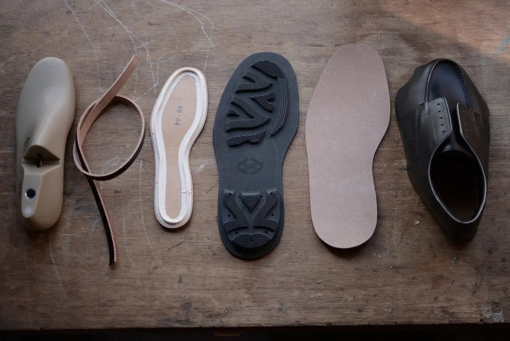
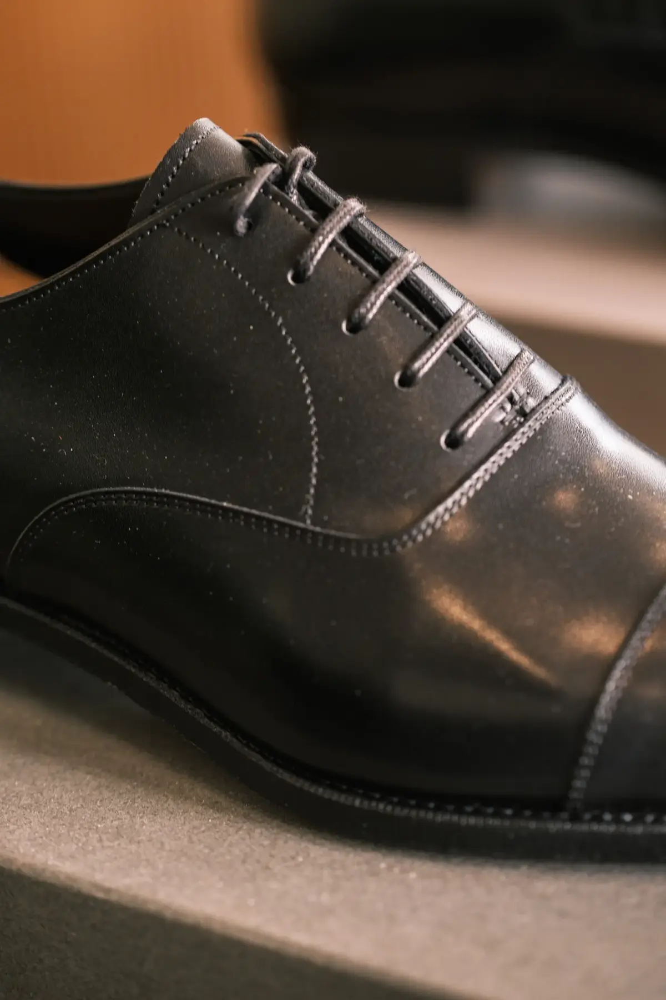

Collection
COLLECTION
新品は、東京・浅草の RENDO。
中古は、工房で整えてから。

New
RENDO
RENDOは東京・浅草にあるアトリエ兼ショップを拠点に活動するシューズブランドです。
企画はアトリエ内でオリジナルの靴型を製作することから始まりました。靴のフォルムやデザイン、フィッティングの両面において重要な意味を持つ靴型。RENDOの靴は履き心地を一番に考慮し、日本人の足の特徴を踏まえ、足形の採寸データをもとに何度も検証を繰り返しながら削り上げられた靴型がベースです。靴の印象を決めるつま先は主張しすぎないバランスのとれた形状を持ち、流行に左右されない上品な足元を演出します。
またその靴型の背景を熟知する制作者が、自らのパタンナーとしての経験と技術をもとに、クラシックな意匠を型紙に落としこむことで、靴型の意図を損なうことなくより一貫性が保たれ、更に洗練されたラインを持つデザインを生み出しました。

RENDOの靴は浅草の熟練した職人技を持つ工場に生産をお願いしています。ブランド名の由来である「連動」をテーマに、自らが企画の段階から何度も工場に足を運び、円滑にものづくりができるよう職人のみなさんと話し合いを重ね、試作と検証を繰り返すことで、よりイメージに近く高いクオリティーを持つ靴が出来上がりました。
Gallery

Used
USED SHOES
工房で整備した中古の革靴です。一点ずつ状態を確認し、必要な修理やケアを施してます。
現在販売中の商品はメルカリshopsにてご覧いただけます。
掲載中の出品はありません。最新の在庫はメルカリShopsをご確認ください。
Contact
在庫・購入のご相談
RENDO や中古在庫についてのご質問は、メールまたはお電話からどうぞ。